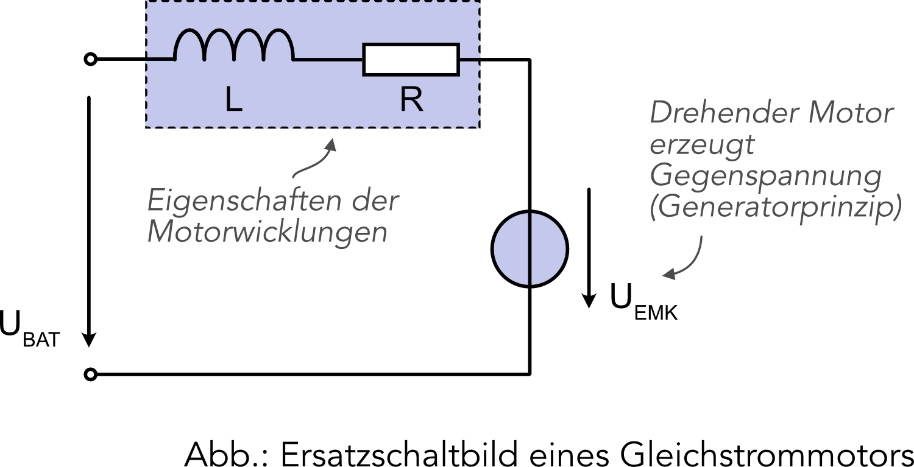
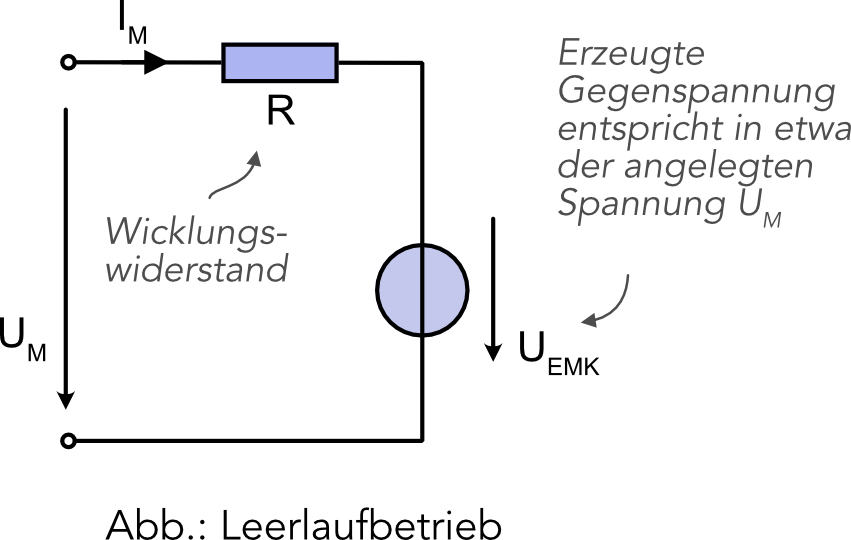
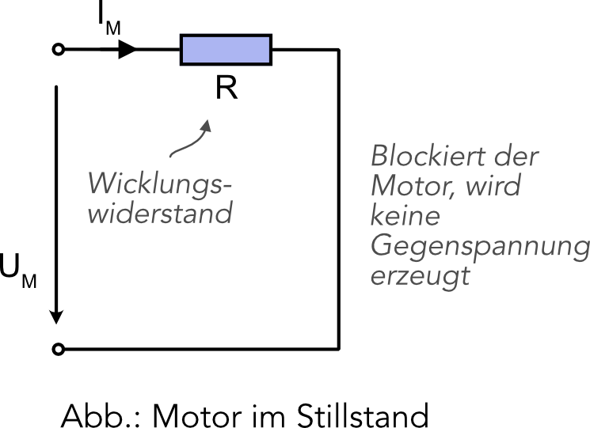
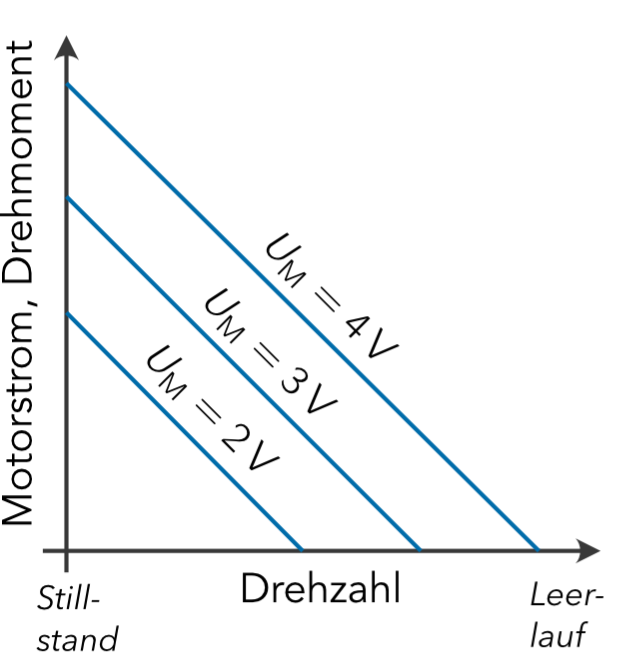

Grundlagen zum Gleichstrommotor
Ein Gleichstrommotor (DC motor) wandelt elektrische Energie (Gleichspannung) in mechanische Bewegung um und stellt damit eine Kernkomponente eines Roboters dar.

Elektrisches Verhalten
Was ein Elektromotor macht, ist allgemein bekannt. Wird er an einer Spannungsquelle, zum Beispiel einer Batterie, angeschlossen, beginnt sich der Motor oder genauer die Motorwelle zu drehen. Die physikalischen Grundlagen dafür, also das Zusammenwirken von elektrischem Strom, Magnetfeld und der daraus resultierenden magnetischen Kraft, sollten zum Verstehen des folgenden Abschnitts bekannt sein.
Sollten Ihnen die physikalischen Grundlagen eines Elektromotors unklar sein, sind die folgenden Webseiten sehr gut geeignet, um sich die fehlenden Kenntnisse zu erarbeiten.
Ersatzschaltbild (equivalent cirquit)
Um die elektrischen Eigenschaften eines Elektromotors zu verstehen, ist es hilfreich sein Verhalten mit einem Ersatzschaltbild zu beschreiben.
Ein Ersatzschaltbild ist die graphische Darstellung einer elektrischen Schaltung, welche die selben elektrischen Eigenschaften aufweist, wie das Originalbauteil. Mechanische Eigenschaften, wie zum Beispiel das Drehmoment (torque), die Drehzahl (rotational speed), etc. werden durch das Ersatzschaltbild nicht dargestellt.

Motorwicklungen (motor windings)
Ein wesentlicher Bestandteil der Ersatzschaltung sind die elektrischen Eigenschaften der Motorwicklungen. Die ohmschen Verluste aufgrund von Kontakten und der endlichen Leitfähigkeit der Wicklungen werden mit dem Widerstand R beschrieben. Der ohmsche Widerstand ist meistens relativ klein (beim verwendeten Motor ca. 5 bis 6 Ohm).
Die Motorwicklungen verhalten sich außerdem wie elektrische Spulen und werden in der Ersatzschaltung zusätzlich durch das Spulensymbol (L) dargestellt. Spulen sind elektrische Energiespeicher, in welchen sich der elektrisch Strom niemals abrupt ändern darf. Dies gilt es besonders beim Ausschaltem des Motors zu beachten.
Generatoreffekt
Ein sich drehender Motor wirkt immer auch als Generator und erzeugt eine Gegenspannung \(U_\text{EMK}\) (EMK - elektromotorische Kraft). In der Schaltung wird diese Spannung durch eine Spannungsquelle dargestellt, die der angelegten Motorspannung \(U_\text{M}\) entgegenwirkt. Die Gegenspannung ist direkt abhängig von der Drehzahl des Motors.
Betriebsarten (operating mode)
Prinzipiell können drei Betriebsarten unterschieden werden: Leerlaufbetrieb, Lastbetrieb und Motorstillstand (blockierter Motor).
Leerlaufbetrieb (idle operation)
Im Leerlaufbetrieb wird der Motor mit der Nennspannung betrieben und dreht sich ohne Last mit der Nenndrehzahl. Der Motor muss nur die Reibung der Achse und eventueller Getriebe überwinden. Im Leerlauf nimmt die Gegenspannung \(U_\text{EMK}\) theoretisch den Wert der angelegten Motorspannung \(U_\text{M}\) an. In Wirklichkeit ist sie jedoch aufgrund der ohmschen Verluste der Wicklungen und der zu überwindenden Reibung des Motors etwas kleiner.

Mit dem Maschensatz kann folgende Gleichung für die Ersatzschaltung aufgestellt werden: $$U_\text{M} = I_\text{M} \cdot R + U_\text{EMK}.$$
Zur Bestimmung des Motorstroms wird die Gleichung nach \(I_\text{M}\) umgestellt: $$ I_\text{M} = \frac{U_\text{M} - U_\text{EMK}}{R}.$$ An dieser Gleichung ist gut zu erkennen, dass im Leerlaufbetrieb, wenn die Gegenspannung \(U_\text{EMK}\) nur ein wenig kleiner ist als die Motorspannung \(U_\text{M}\), der vom Motor aufgenommene Strom relativ klein ist.
Mit einer angelegten Motorspannung von \(U_\text{M} = 6 V\), einer Gegenspannung von \(U_\text{EMK} = 5V\) und einem ohmschen Widerstand der Motorwicklungen von \(R = 6 \Omega\), würde sich folgender Motorstrom ergeben: $$ I_\text{M} = \frac{6\text{V} - 5\text{V}}{6\Omega} = 167 \text{mA}.$$
Lastbetrieb (load operation)
Im Lastbetrieb wird der Motor zusätzlich belastet. Dies kann eine Beschleunigung sein oder auch ein Roboterchassis, welches der Motor antreiben soll. Im Lastbetrieb reduziert sich die Drehzahl des Motors unter die Nenndrehzahl, wodurch auch die vom Motor erzeugte Gegenspannung \(U_\text{EMK}\) verringert wird. Mithilfe der Gleichung für den Motorstrom \(I_\text{M}\) $$ I_\text{M} = \frac{U_\text{M} - U_\text{EMK}}{R}$$ lässt sich gut erkennen, dass sich der Motorstrom umsomehr erhöht, je größer die Last ist, bzw. je kleiner die Motordrehzahl.
Stillstand des Motors (stall operation)
Im Extremfall, wenn der Motor durch eine zu große Last belastet wird, kommt der Motor zum Stillstand, wird also blockiert. In diesem Fall wird keine Gegenspannung \(U_\text{EMK}\) mehr erzeugt.

Ohne eine Gegenspannung fällt die gesamte Motorsspannung \(U_\text{M}\) an dem Wicklungswiderstand \(R\) des Motors ab. Dadurch wird der Motorstrom nur noch von dem Winklungswiderstand begrenzt. Mit einem Wicklungswiderstand von \(R = 6 \Omega\) und einer angelegent Motorspannung \(U_\text{M} = 6 V\) ergibt sich ein Stillstandsstrom von: $$ I_\text{M} = \frac{6\text{V} - 0\text{V}}{6\Omega} = 1 \text{A}.$$
Die Stromaufnahme eines Gleichstrommotors wird im Stillstand maximal und kann abhängig vom Motor und der angelegten Spannung einige Ampere erreichen! Dieser maximale Strom wird auch Stillstandsstrom oder stall current genannt.
Kennlinie

In der Abbildung ist die vereinfachte Kennlinie eines Gleichstrommotors dargestellt. Für eine feste Motorspannung (z.B \(U_\text{M} = 3 \text{ V}\)), ergibt sich ohne Last ein feste Leerlaufdrehzahl. Wird der Motor nun belastet, reduziert sich die Drehzahl, während sich gleichzeitig die Stromaufnahme des Motors erhöht. Bei maximaler Belastung kommt der Motor zum Stillstand und es fließt der maximal Stillstandsstrom.
Zum Ändern der Motorgeschwindigkeit muss die angelegte Motorspannun geändert werden. Dies kann zum Beispiel mit einem PWM-Signal gemacht werden.
Kenngrößen
Zur Beschreibung der Eigenschaften von Elektromotoren gibt es verschiedene Kenngrößen:
- Die Nennspannung (operating voltage)\(U_N\) ist die an den Motor anzulegende Spannung und sollte im Regelbetrieb nicht überschritten werden. Typischerweise liegt die Nennspannung bei DC-Motoren zwischen 1,5 V und 24 V und wird vom Hersteller angegeben. Bei der Nennspannung hat der Motor die höchste Effizienz.
- Die Drehzahl im Leerlauf (rotational speed under ilde operation)\(n_0\) gibt an, wie schnell sich der Motor ohne Belastung bei der Nennspannung dreht. Bei den meisten DC-Motoren liegt die Drehzahl zwischen 3000 und 8000 Umdrehungen pro Minute (RPM).
- Die veränderliche Stromaufnahme (current consumption) gibt an, wie groß die Stromaufnahme des Motors ist. Sie hängt sehr stark von der Belastung des Motors ab und kann einige Ampere erreichen.
Bei dem verwendeten Motor mit Getriebe gelten folgende Kennwerte:

- Nennspannung \(U_N\) = 3 V ... 6 V
- Leerlaufdrehzahl von \(n_0\) = 120 RPM ... 250 RPM (RPM: revolutions per minute)
- Stromaufnahme im Leerlauf ca. 150 mA bis 160 mA, unter Last steigt die Stromaufnahme jedoch stark an und kann beim Blockieren des Motors bis zu 2 A erreichen.
Aufgaben
- Ein einfacher Gleichstrommotor wird mit vier in Reihe geschalteten 1,5 Volt Batterien betrieben. Die Maximalspannung der neuen Batterien beträgt 1,58 V. Mit welcher maximalen Stromaufnahme muss bei dem Motor gerechnet werden, wenn der Wicklungswiderstand R = 5 ohm beträgt?
- Die zwei Motoren eines einfachen Roboters werden mit vier in Reihe geschalteten 1,5 Volt Batterien betrieben, welche am Anfang ein Energie von 1,38 Wh (Wattstunden) gespeichert haben. Die Stromaufnahme jedes einzelnen Motors beträgt im Mittel 350 mA. Die über die Zeit gemittelte Spannung der einzelnen Batterien beträgt 1,2 Volt. Berechnen Sie die maximale Betriebszeit der beiden Motoren.
- Erläutern Sie, warum ein Elektromotor nicht blockiert werden sollte. Welche Gefahren treten für den Motor, aber auch den Anwender auf?
- Schließen Sie die beiden Kontakte des Motors kurz (zum Beispiel mit dem Steckbrett) und drehen Sie per Hand den Motor. Wiederholen Sie das Experiment, wenn die beiden Anschlüsse offen (nicht kurzgeschlossen) sind. Was fällt Ihnen auf? Notieren Sie Ihre Beobachtungen und versuchen Sie diese mit Hilfe der Ersatzschaltung des Motors zu erläutern.